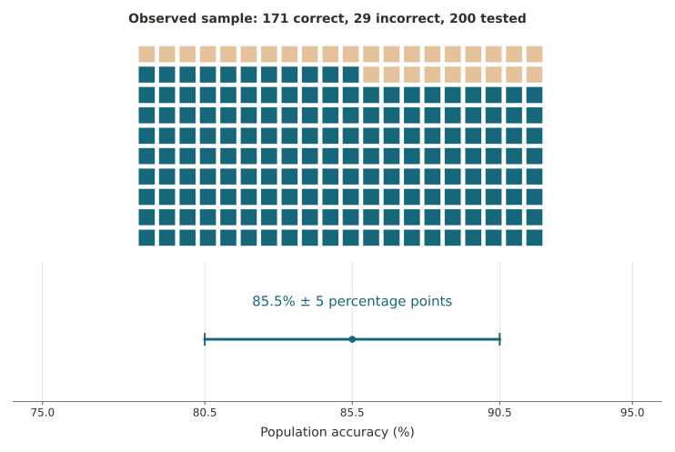

Measuring an AI system with samples
Treat benchmark accuracy as a sample statistic, construct its reported interval, and identify the population and assumptions needed for interpretation.
A benchmark is an observed collection of tasks
A model’s percentage score needs a defined question: on what collection of tasks, under what conditions, and using what standard of correctness? A benchmark is a set of tasks used for evaluation. Its observed score is a statistic. To make an inference, we also need to identify the larger task population it could reasonably represent.
Suppose a model answers 82 of 100 sampled questions correctly. Its sample accuracy is \(82/100=0.82\), or 82%. The population of interest might be questions of this specified type. That is more limited than every possible request, language, and context.
For practice, suppose the reported margin is eight percentage points. The interval is [74%, 90%]. It concerns the defined population accuracy under the study’s assumptions. It does not say every future answer has a personal probability somewhere in that interval.
Benchmark calculations
A model answers 171 of 200 test questions correctly. Its sample accuracy is reported with a margin of five percentage points. Convert carefully between a decimal and a percentage.
Count, proportion, and interval

Five percentage points is not five percent of 85.5. The decimal accuracy is 0.855, its percentage is 85.5%, and its five-percentage-point margin is 0.05 on the decimal scale.
Precision and the population being measured
A larger comparable sample can reduce random sampling uncertainty. It does not automatically fix an unrepresentative set of tasks, repeated near-duplicate questions, an inconsistent grader, or an ambiguous definition of correctness. Those affect what the score means and how its uncertainty should be assessed.
Imagine all sampled tasks come from one document, while the intended use includes many unrelated documents. More tasks from that one source might produce a narrow interval for the wrong population. The sample count and the relevance of the sample answer different questions.
Use the additional AI evaluation practice to distinguish populations from statistics and compare two overlapping reported intervals.